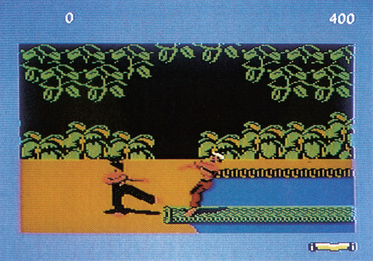
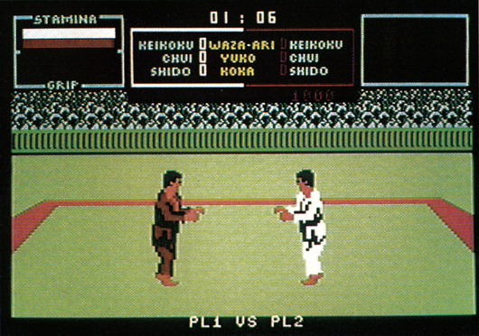

Karate, Judo und kein Ende ...
Was von vielen befürchtet wurde, ist eingetreten. Wie noch nie überschwemmen Kampfsport-Spiele den Spielemarkt. Ist da noch etwas Gutes dabei?
Mit »Way of the Exploding Fist« begann vor gut anderthalb Jahren der nicht abreißen wollende Strom der Karate-Spiele. Dieser Klassiker zählt heute noch zu den technisch besten Karate-Spielen, wurde aber auch schon von Programmen wie »International Karate« übertroffen. Trotzdem darf das erfolgreiche Programm nicht ohne Nachfolger bleiben: Schlicht und einfach »Fist II« heißt die Fortsetzung.

Zur Handlung: Sie sind als junger, aufstrebender Karate-Lehrling von ihrem Dorf beauftragt worden, den bösen Tyrannen zu finden und zu vernichten. Dieser hockt irgendwo auf einem Vulkan, der laut Programmierern etwa 700 Bildschirme weit entfernt ist. Auf dem weiten Weg treffen sie nicht nur auf zahlreiche Gegner, die per Karate-Treffer (Originalton der Anleitung: »Schlag mit Faustexplosion«) ins Jenseits befördert werden müssen. Sie finden auch seltsame Schriftrollen mit magischen Fähigkeiten und einige Tempel, in denen Sie meditieren und so neue Kräfte hinzugewinnen können.
Viel Wert hat man auf die einzelnen Gelände gelegt, in denen die Handlung spielt. Da gibt es Häuser, Wälder, Seen, Sümpfe, und Höhlen, jeweils mit eigenen Kampfspezifischen Eigenschaften. Dafür sehen die angreifenden Gegner bis auf die Kopfbedeckung immer gleich aus.
Technisch ist Fist II wahrlich nicht das Gelbe vom Ei. Es gibt weder Titelbild, noch High-Score-Liste, so daß man bei Spielende einfach nur abrupt an den Anfang transportiert wird. Außerdem haben die Programmierer einige Fehler übersehen. Drücken Sie die Pausen-Taste, wenn der Bildschirm scrollt, gleitet ihr Spieler sanft am nächsten Gegner vorbei (gut zum Schummeln). Wenn ein Kämpfer aus dem Wasser ans Land kommt, hat der Arme keine Beine mehr, weil das Programm diese effektvoll unter dem Erdboden versteckt.
Ein kleines Lob sei bei Fist II der sehr effektvollen Musik ausgesprochen, die wirklich viel Atmosphäre schafft. Ansonsten ist Fist II aber enttäuschend: Die unterdurchschnittliche Grafik und die Fehler sind nicht die einzigen Minuspunkte. Auch ist die auf Dinge sammeln und Menschen töten beschränkte Handlung bei weitem nicht so faszinierend wie beim Vorgänger. Da kann auch das umsonst beigelegte Bonus-Spiel, ein »Remix« des alten »Exploding Fist« nicht mehr viel retten.
| Titel | Fist II |
|---|---|
| Spielidee | 9/15 |
| Grafik | 9/15 |
| Sound | 11/15 |
| Schwierigkeit | 11/15 |
| Motivation | 8/15 |
| Besonderheiten | Nachfolgespiel |
| Hersteller | Melbourne House/Micropool |
| Preis | 39 Mark (K.), 59 Mark (D.) |
| Bezugsquelle | Rushware, Daimlerstr. 11, 4044 Kaarst 2 |
Einziger Lichtblick in der Karate-Schwemme ist ein Judo-Spiel. »Uchi Mata« heißt das Programm, das für sich in Anspruch nimmt, eine technisch perfekte Simulation des Judo-Sports zu sein. Da der Tester von Judo keinerlei Ahnung hat, ließ er sich von einem kundigen Kollegen beraten. Dieser meint, daß Uchi Mata seiner Aufgabe gerecht wird und Judo so gut simuliert, wie es überhaupt auf einem Heimcomputer möglich sei.

Uchi Mata spielt sich auch völlig anders als die üblichen Kampfsport-Spiele. Bei Judo geht es darum, den Gegner geschickt zu Boden zu werfen. Vor dem Wurf ist es aber wichtig, ihn korrekt zu packen und die richtige Fußstellung zu haben. Die einzelnen Würfe werden sehr intelligent angewählt. Sie müssen mit dem Joystick eine Art Drehbewegung in Wurfrichtung ausführen. Diese Art der Steuerung ist zwar sehr kompliziert, aber auch sehr realistisch.
Die Regeln sind ähnlich kompliziert wie die Spielweise. Da wimmelt es nur so von japanischen Ausdrücken für Punktewertung, Strafpunkte und Würfe. Glücklicherweise hilft hier die deutschsprachige Anleitung über die ärgsten Klippen hinweg. Absichtlich werden aber die meisten Würfe und die Verteidigungsmöglichkeiten verschwiegen. Hier sind die Spieler aufgefordert, selber zu entdecken, was alles in dem Programm steckt.
Uchi Mata ist eine sehr ungewöhnliche und einfallsreiche Sportsimulation, die man nicht in das Heer der leider allzu typischen Kampfsport-Spiele einordnen sollte. Wer sich für das intelligent gemachte Judo-Spiel interessiert, wird auch gerne mit der wenig spektakulären Grafik und Musik vorlieb nehmen.
| Titel | Uchi Mata |
|---|---|
| Spielidee | 11/15 |
| Grafik | 10/15 |
| Sound | 10/15 |
| Schwierigkeit | 12/15 |
| Motivation | 11/15 |
| Besonderheiten | technisch anspruchsvoll |
| Hersteller | Martech/Micropool |
| Preis | 39 Mark (K.), 59 Mark (D.) |
| Bezugsquelle | Rushware, Daimlerstr. 11, 4044 Kaarst 2 |
Aber damit ist immer noch kein Schlußstrich unter die Karate-Welle gezogen. Uns stehen mindestens noch drei Programme ins Haus, die sich mit diesem Thema befassen.
(bs)